灘校パソコン研究部
2013年文化祭
第67回灘校文化祭は、
2013年5月2日(木)
、
5月3日(金・祝)
の両日開催です。
今年も灘校パソコン研究部の展示にぜひお越しください。
部誌
2013年部誌ページ数:315 サイズ:29.0MB

目次
ステージ企画
リアルタイム作曲
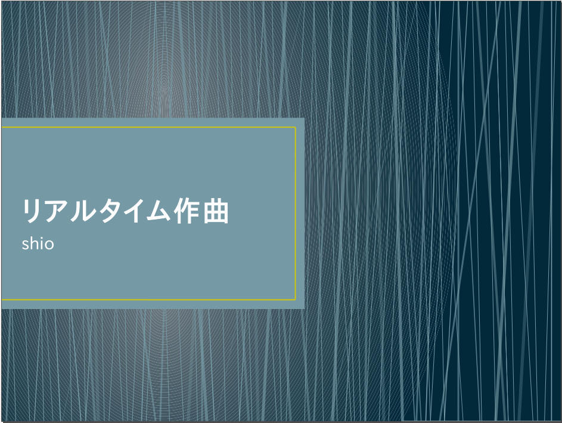デスクトップ上で作曲を行う「DTM」の解説や、作曲理論についての説明を行いながら、1コマで1曲を作っていく企画です。それぞれのコマで制作した曲たちがこちら
1.Be AGREEM!!!!!, 2.The Revolving, 3./]cw[-24:@!!)n\, 4.少女は大樹の影に
人間 VS PC
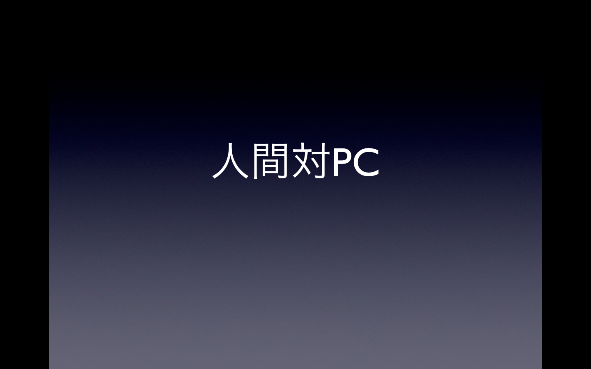1秒間に10億回の計算ができるPC。そんなのに人間が勝てるわけがない！しかし、囲碁や将棋の世界ではプロがPCに勝ったりしています。数の暴力のPCと、生物最強の知性の人間では、どちらが強いのか。どういう時に強いのか。初心者にもわかりやすく説明します。ご期待ください。
スライドはこちらPC解体実演
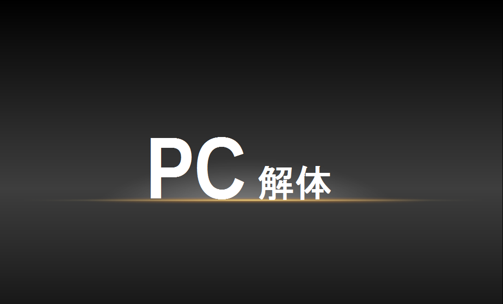古いデスクトップPC本体を解体していくステージ企画です。1人は解体、もう一人は出来るだけわかりやすく解説をするので、PCのことをよく知らない人も見に来てください。
スライドはこちらハッキング実演
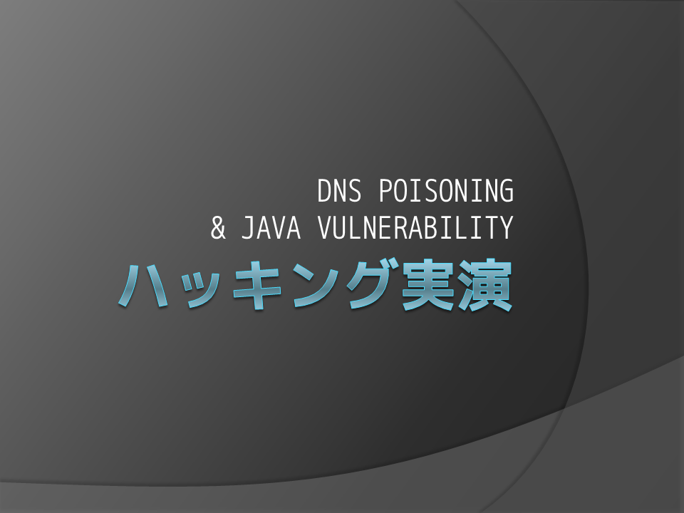3年前から始まった目玉企画、「ハッキング実演」 実際にハッキングをしてみて、その脅威を目の当たりにしてもらいます。 今年はDNSポイゾニングとJavaの脆弱性を利用したブラウザ経由攻撃の２つを組み合わせた本格派！ 知識のある方にもお楽しみいただけるとおもいます。
スライドはこちら展示物
パーツ展示
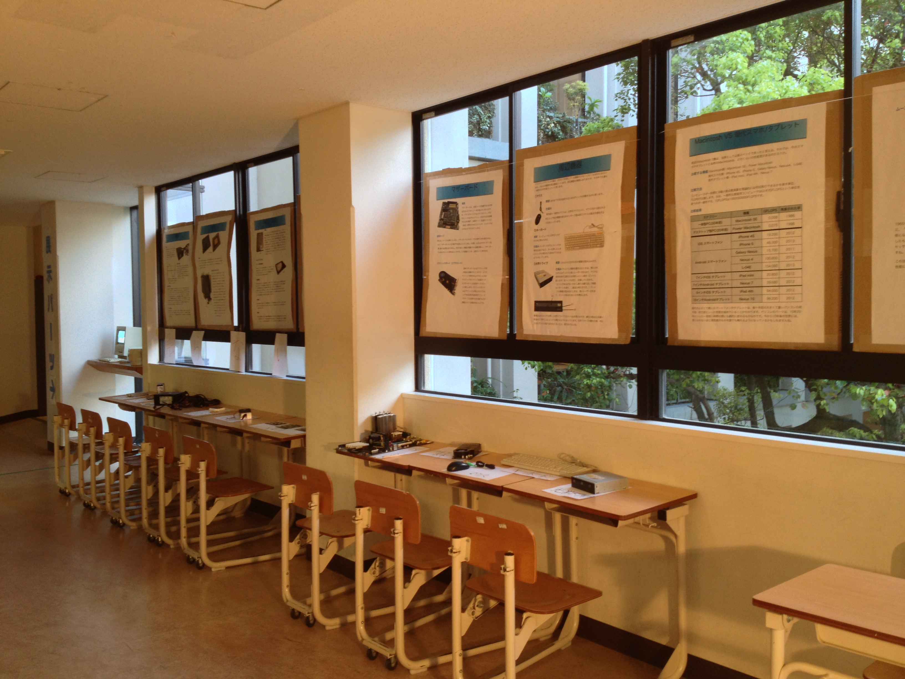毎年恒例となったパーツ展示を、今年も行います。詳しく、わかりやすい説明を心がけました。近くにいる担当者に声をかけていただければ、質問にも答えます。ぜひおいでください！
展示に使われたポスターのPDFはこちら
なぞかけりょーこちゃん
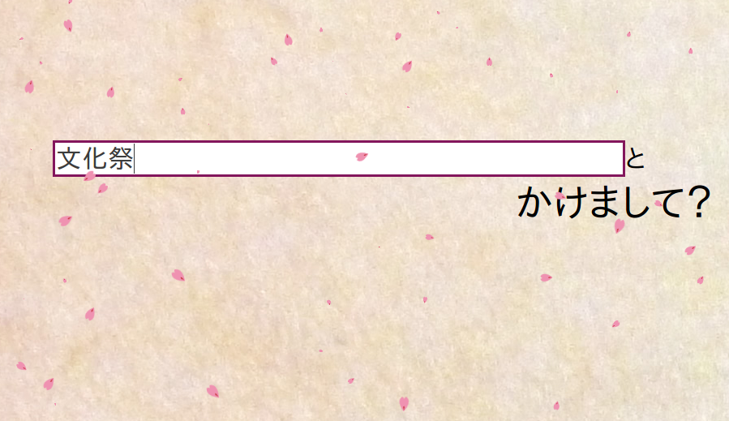大喜利では欠かせない「なぞかけ」。いざ挑戦してみると、案外難しいものです。なぞかけりょーこちゃんはお題を言うと、自動でなぞかけを生成してくれる優秀なAIです。その知識は全人類の英知が集結したWikipediaを元にしています。ぜひご覧ください。ちょっとセンスが無いのが玉に瑕...
ことばひいろう
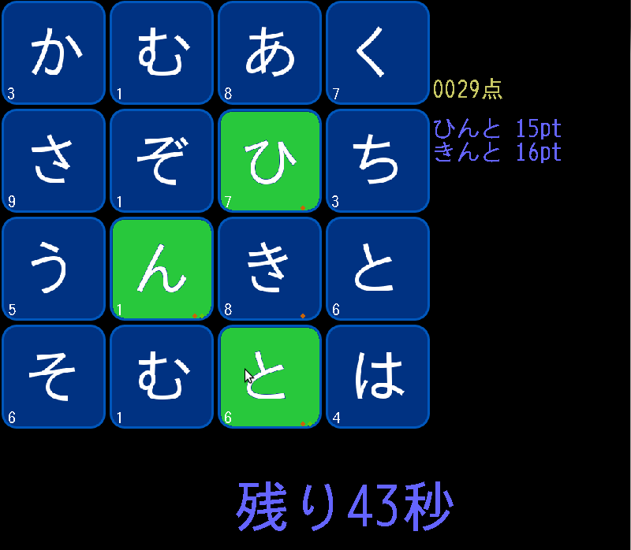限られたひらがなをつなげて、単語を作るゲーム。みなさんも一度はやったことあるのではないでしょうか。「ことばひいろう」正方形状に並べられたひらがなのなかから、つながっている単語を見つけるゲームです。オンライン対戦も対応しております。世界でもヒットした言語パズルWordHeroの日本語版, ぜひご覧ください。
校内3Dシミュレーション
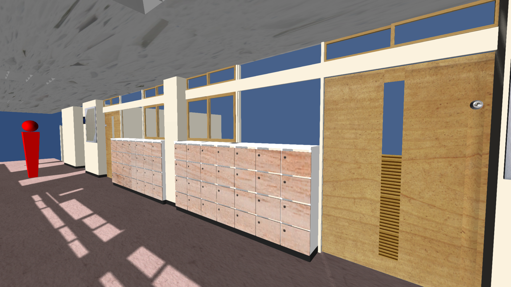昨年から引き続き灘の校舎を3Dモデル化する展示です。 昨年は準備不足で至る所が未完成でしたが、今年は作業の習熟もあり、見苦しい点のないものを目指しました。 さらに、ただ3Dモデルを展示するだけでなく、来場者に配慮しながらもシューティング要素を取り入れ、より鑑賞要素に富むものとしました。 進歩したDirectX 11レンダリングの生み出す光の描写にもぜひご注目ください。
PrimeSlash
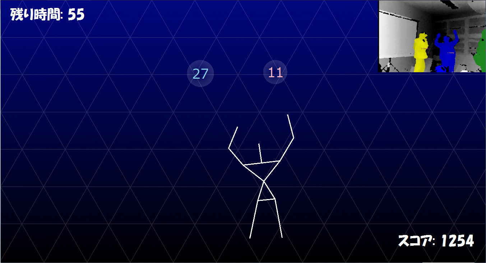昨年に引き続き、今年もKinectを使ったゲームがあります。 それがこのPrimeSlashです。 数の書かれた泡が落ちてきて、素数なら触らず、 そうでないなら切ることで得点を稼ぐというものです。 頭と使いながら体を動かす、去年とはまた一味違ったゲームです。
ミニ四駆タイムトライアル
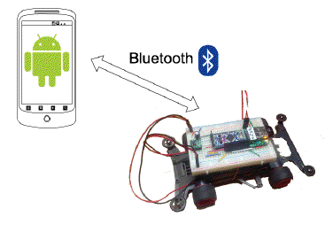その名の通りミニ四駆でタイムトライアルをします。ただし、操縦方法が他とは違う。ミニ四駆はあなたがスマートフォンを振る速度に応じて、加速します。いかに早くコースを1周できるかは、あなたの振り具合にかかっています。ぜひ挑戦してみてください。
バランス迷路
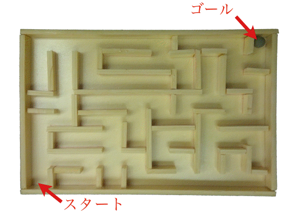遊び方はカンタン。Wiiバランスボードに乗って、体重をかけた方に迷路が傾きます。がんばって、ボールをゴールまで導いてください！
TAPLAYER
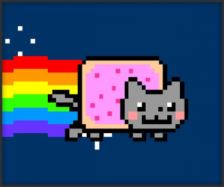あなたが、蛇口をひねれば水が流れる。水に沿って、猫がたくさん流れてくる。それと同時に音楽が速くなる。ひねり方の数だけ音楽がある。蛇口で音楽を再生するといういままでに無い新感覚デバイスをお楽しみください。
ゲーム
RandPack
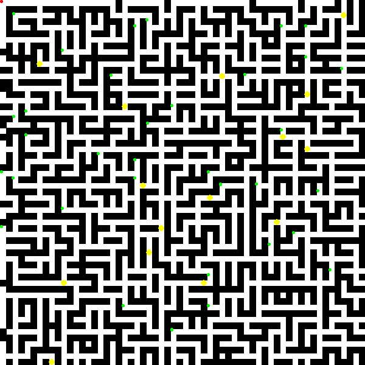昔からあるゲーム「パックマン」を毎回変わるステージにしてみたゲームです。 ほとんどの要素をランダムにしたので運が悪ければ難しいステージになるかも？ 毎回変わる要素が多いので飽きることのないゲームです。
ダウンロードAutoJump
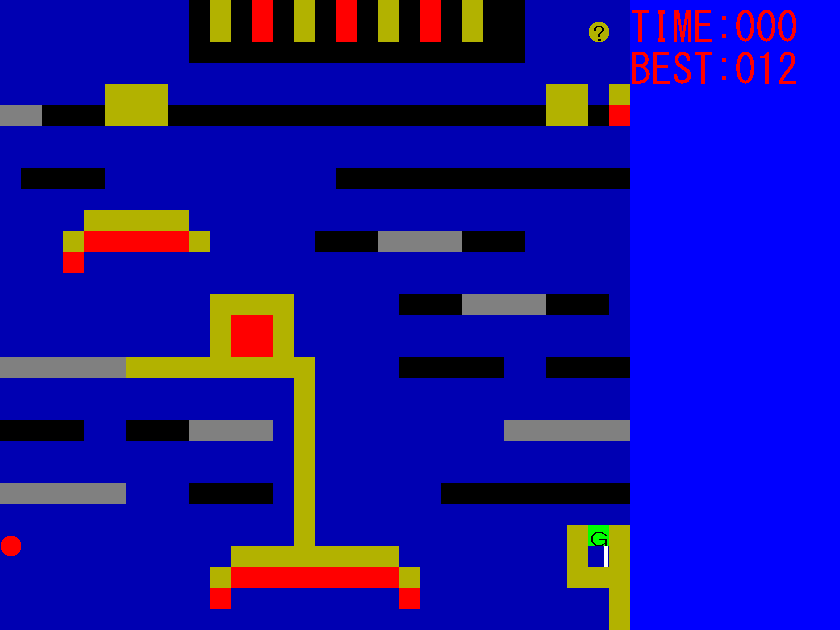簡単な操作でボールをゴールに導くアクションゲームです。操作が簡単だからと言ってゲーム自体も簡単だとは限りません。あなたは何秒でクリアできるでしょうか。
ダウンロードSet
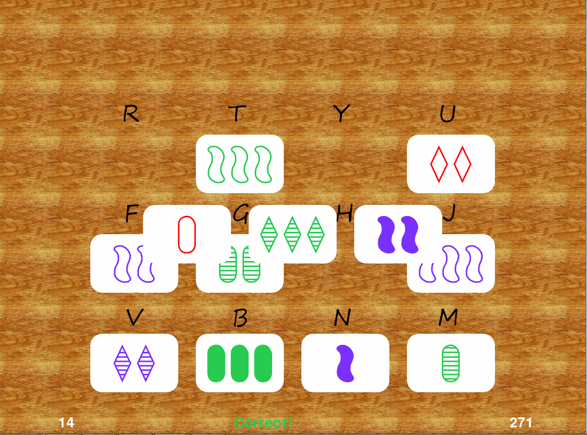複数枚のカードの中から特定の3枚の組み合わせを見つけるゲームです。単純に見えて、案外難しい。ぜひ高得点を目指してください。
ダウンロードKanimiso Classic
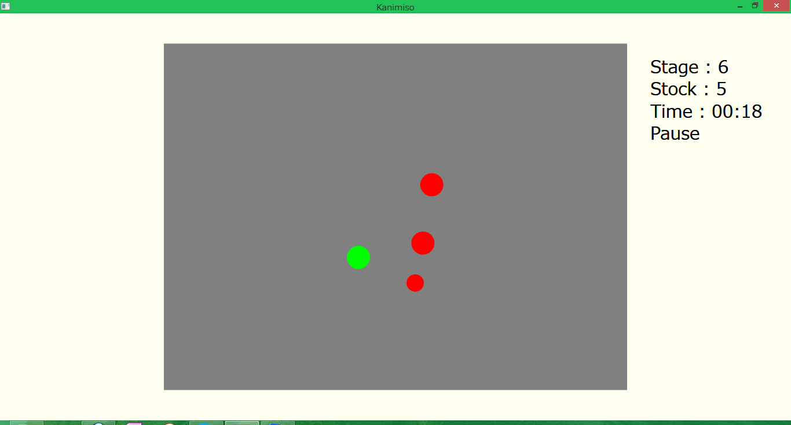Macintosh SEにも入っていた、古くて新しいゲーム「Kanimiso」。今回Windows版を作りました。シンプルなルール。物理法則に裏付けられた気持ちいい操作感。意外な難しさ。ぜひお楽しみください。
ダウンロードブロック崩し2013
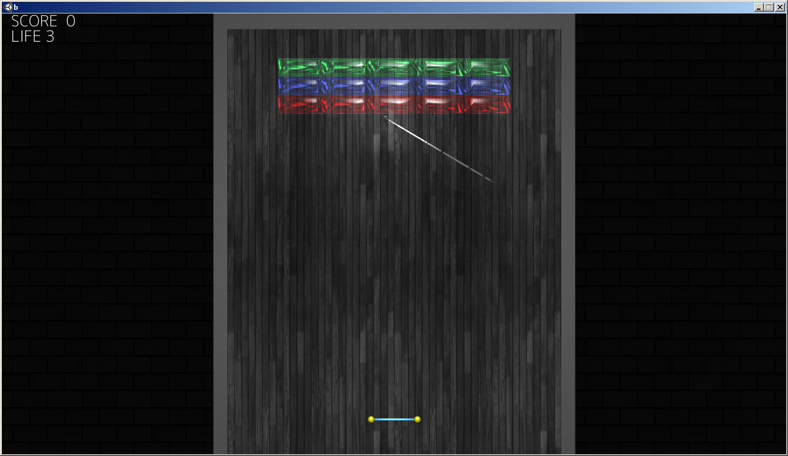ブロック崩しをUnityで実装しました。単純なゲームですが、Stageがたくさんあり、なかなか楽しめると思います
未公開です空からりんごが降ってきた！
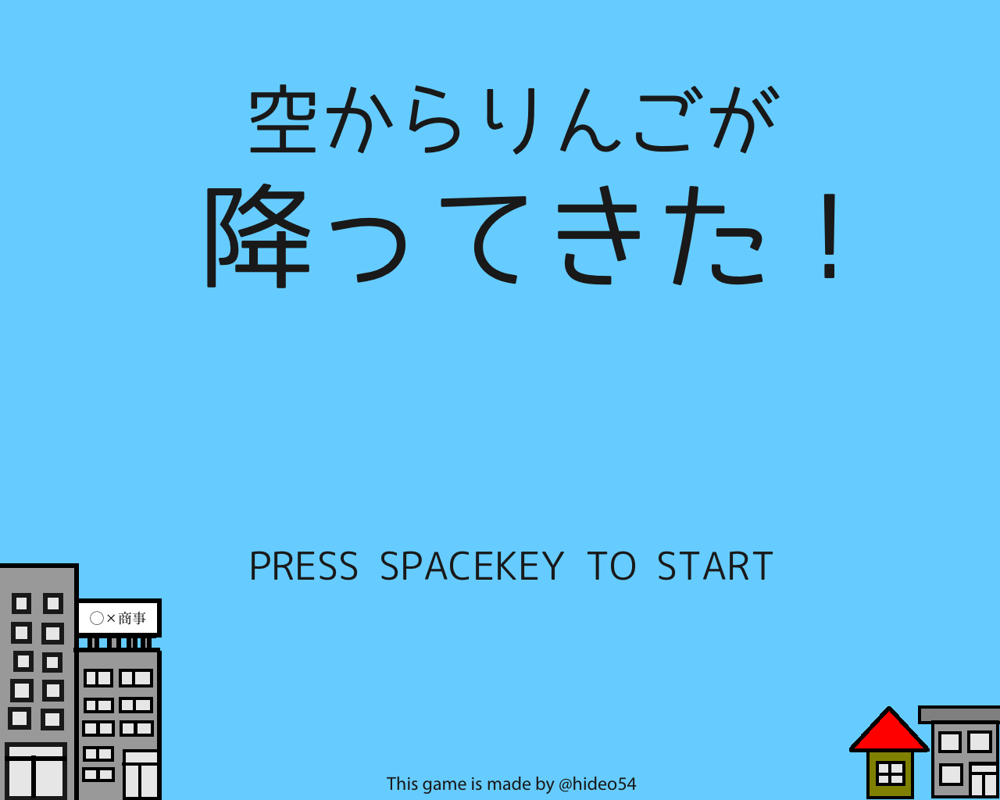Apple社が大好きなHくんは、いつも「Apple製品を買いたいなあ…」と思っていました。 しかし、Hくんは貧乏なので、そんなお金はありません。 そんなある日、突然空から念願のApple製品が落ちてきたのです！ Hくんは、近くに落ちていたかごを使って、拾い集めることにしました！
ダウンロード